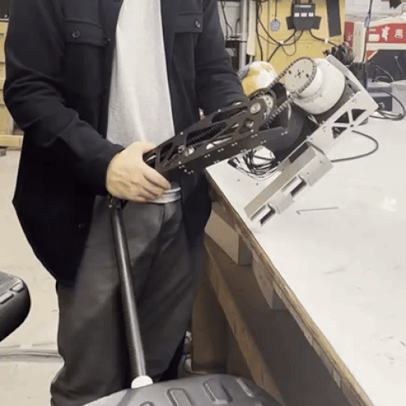

Danya Kogan

Zoe2 Field Rover
This ongoing project aims to build an updated version of Carnegie Mellon and NASA’s ‘Zoe’ rover. This robot will operate autonomously in Chile’s Atacama desert, and will be used to develop navigation tools and technologies pertaining to on-board soil analysis to be used on future expeditions to Mars by NASA.
My main role in this project was manufacturing components using CNC tools, as well as thermal analysis of parts.
This project is being done under the Planetary Robotics Lab at Carnegie Mellon University.
My main role in this project was manufacturing components using CNC tools, as well as thermal analysis of parts.
This project is being done under the Planetary Robotics Lab at Carnegie Mellon University.
Quadruped Robot
This ongoing project aims to build an open-source quadruped robot dog, akin to Boston Dynamics’ Spot. This project has mechanical, software, and electrical subteams, each with their own assortment of projects.
I serve as the mechanical lead for this project, and help to coordinate between the different projects under the mechanical subteam.
This project is being done under the Robotics Club at Carnegie Mellon University.
I serve as the mechanical lead for this project, and help to coordinate between the different projects under the mechanical subteam.
This project is being done under the Robotics Club at Carnegie Mellon University.


Cycloidal Gearbox
This project developed a custom cycloidal gearbox to be used in the Quadruped Robot project in the robotics club.
I designed it to be able to be manufactured in-house with shop tools available to me -- those being a laser cutter and a manual mill.
This project was also presented at Carnegie Mellon’s Meeting of the Minds undergraduate research symposium in May 2025.
I designed it to be able to be manufactured in-house with shop tools available to me -- those being a laser cutter and a manual mill.
This project was also presented at Carnegie Mellon’s Meeting of the Minds undergraduate research symposium in May 2025.
Recycled Soda Can Wind Turbine
Bla bla bla ble ble ble blu blu blu


Soft Robotic Manipulator
In this project, I designed and fabricated my own pneumatically-actuated soft robotic “hand”. I had to learn how to make high-quality, 3D print-able molds, and how to fabricate parts that require multiple casts.
This was a personal project.
This was a personal project.
Arduino Syringe Pump
To precisely control my soft robotic manipulator, I needed to use something other than manually squeezing a syringe. Using an Arduino Uno, a stepper motor, a syringe and various other electrical and mechanical components, I build a syringe pump which can be controlled over a serial usb connection.
This was a personal project.
This was a personal project.